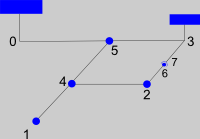

| Esquema red inicial ejemplo |  | |
| Cota lámina depósito referencia: | ||
| Tramos/Nudos aguas abajo: | Nombres separados por ", " (coma y espacio) | |
| Nudos aguas arriba: | Números indicadores de posición, comenzando en 0, en el vector de arriba, separados por ", " (coma y espacio) | |
| Malla: | Nudos que cierran una malla; -1 es el nudo maestro y, a continuación la posición del esclavo, separados por ", " (coma y espacio) | |
| Cotas nudos: | Cotas de los nudos con consumo | |
| Altura de presión en los nudos: | Altura de presión en los nudos con consumo | |
| Caudal nominal nudos: | Caudal nominal de los nudos. Valor cero si no hay consumo | |
| Exponente ec. desagüe nudos: | Exponente ec. desagüe nudos. Valor cero si la altura de presión la fija un depósito | |
| Límite caudal nudos: | En caso de que los nudos cuenten con un limitador de caudal. Si no lo tienen poner un valor muy alto | |
| Diámetros: | Diámetros de los tramos | |
| Asperezas: | Aspereza de arena equivalente de los tubos de los tramos | |
| Longitudes: | Longitud de cada tramo | |
| Longitud equivalente de pérdidas de carga localizadas: | Proporción estimada de las pérdidas de carga localizadas frente a las de los tramos uniformes en cada tramo | |
| Viscosidad cinemática del agua: |
Esta calculadora, en las que las las pérdidas de carga en tramos uniformes se calculan con el factor de rozamiento de White-Colebrook, tiene como objetivo que la determinación de los caudales desaguados en las bocas o en los depósitos (nodos de consumo), no te impida abordar los análisis más sencillos.
No obstante, el dominio de las técnicas de resolución de dichas variables te permitirá abordar análisis con cierta complejidad.